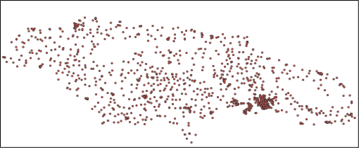
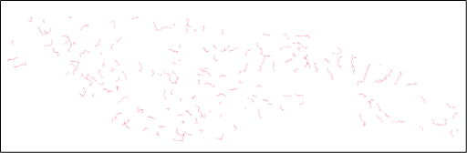
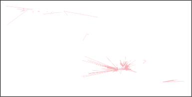

Point-level results

Output File Metadata
| Analysis Source | Indicator | Description |
|---|---|---|
| Input POI data | dataset_id |
Identifier for the source dataset containing this POI |
geometry |
Geometric representation of POI location (point coordinates) | |
lat |
Latitude coordinate of the POI location | |
lon |
Longitude coordinate of the POI location | |
poi_id |
Unique identifier for each Point of Interest (POI) | |
poi_type |
Category/type of POI (e.g. school, health center, town hall) | |
| Proximity | 2g_cell_site_dist |
Distance in meters to nearest 2G cell site |
3g_cell_site_dist |
Distance in meters to nearest 3G cell site | |
4g_cell_site_dist |
Distance in meters to nearest 4G cell site | |
5g_cell_site_dist |
Distance in meters to nearest 5G cell site | |
cell_site_dist |
Distance in meters to nearest cellular tower (any generation) | |
fiber_node_dist |
Distance in meters to nearest fibre optic network node | |
transmission_node_dist |
Distance in meters to nearest transmission infrastructure node | |
| Coverage | 2g_mobile_coverage |
Boolean indicating if POI has 2G mobile network coverage |
3g_mobile_coverage |
Boolean indicating if POI has 3G mobile network coverage | |
4g_mobile_coverage |
Boolean indicating if POI has 4G mobile network coverage | |
5g_mobile_coverage |
Boolean indicating if POI has 5G mobile network coverage | |
| Demand | mbps_demand_per_user |
Bandwidth demand per individual user in Mbps |
number_of_users |
Estimated number of internet users at this POI | |
poi_count_10km |
Number of other POIs within 10km radius | |
poi_count_1km |
Number of other POIs within 1km radius | |
poi_count_2km |
Number of other POIs within 2km radius | |
poi_count_3km |
Number of other POIs within 3km radius | |
poi_count_4km |
Number of other POIs within 4km radius | |
poi_count_5km |
Number of other POIs within 5km radius | |
pop_within_10km |
Population count within 10km buffer around POI | |
pop_within_1km |
Population count within 1km buffer around POI | |
pop_within_3km |
Population count within 3km buffer around POI | |
pop_within_4km |
Population count within 4km buffer around POI | |
pop_within_5km |
Population count within 5km buffer around POI | |
total_mbps |
Total bandwidth demand in Mbps for this POI | |
| Fibre Path | closest_node_distance |
Distance in meters to the closest fibre node |
closest_node_id |
Identifier of the nearest fibre node | |
connected_node_dist |
Distance in meters to the connected fibre node | |
connected_node_id |
Identifier of the node this POI is connected to | |
fiber_path |
Route description for fibre optic connection to this POI | |
fiber_path_incl_poi |
Fibre connection path including this POI in the route | |
fiber_path_order |
Order/sequence number of this POI in the fibre deployment path | |
in_mst_solution |
Boolean indicating if POI is included in fibre path solution | |
max_dist_km |
Maximum allowable distance in km for fibre path solution | |
n_conns |
Number of network connections associated with this POI | |
upstream_node_distance |
Distance in meters to the upstream fibre node | |
upstream_node_id |
Identifier of the upstream network node in the connection path | |
| Visibility | antenna_los_distance |
Line-of-sight distance in meters for antenna/radio connections |
azimuth_angle |
Directional angle in degrees for point-to-point radio links | |
is_visible |
Boolean indicating if POI has line-of-sight to cellular infrastructure | |
is_visible_pois |
Boolean indicating if this POI is visible to other POIs | |
num_visible |
Count of visible cellular sites from this POI location | |
vis_geometry |
Geometric representation of visibility analysis | |
visible_cell_site_dist |
Distance in meters to the nearest visible cellular site | |
visible_cell_site_ict_id |
ID of the nearest visible cellular tower/base station | |
visible_cell_site_radio_type |
Type of radio technology at the nearest visible cell site | |
visible_pois |
List of other POIs visible from this location | |
| Technology Assignment | fiber_feasible |
Whether fibre is feasible for this POI |
number_of_periods |
Total number of time periods for the connection | |
p2area_feasible |
Whether p2area is feasible for this POI | |
p2p_feasible |
Whether p2p is feasible for this POI | |
satellite_feasible |
Whether satellite is feasible for this POI | |
technology |
Selected connectivity technology solution for this POI | |
| Cost | annual_cost |
Annual cost of ownership (CAPEX and OPEX) |
annual_revenue |
Annual operator revenue from ISP retail fees | |
init_capex |
Initial capital expenditure | |
pp_coo |
Total cost of ownership (CAPEX and OPEX) over project period | |
pp_profit |
Operator profits over project period (ISP retail fees minus cost of ownership) | |
pp_revenue |
Operator revenue over project period (ISP retail fees) |
Fibre Path Edge-level results

Output File Metadata
| Analysis Source | Indicator | Description |
|---|---|---|
| Fiber Path | index |
Sequential row identifier for each road network edge/segment |
u |
Source node identifier (starting point of road segment) | |
v |
Target node identifier (ending point of road segment) | |
key |
Unique key identifier for parallel edges between same nodes | |
osmid |
OpenStreetMap identifier for the original road segment | |
geometry |
Geometric representation of the road segment (linestring coordinates) | |
cluster |
Geographical cluster identifier for regional analysis grouping |
Visibility Edge-level results

Output File Metadata
| Analysis Source | Indicator | Description |
|---|---|---|
| Visibility | poi_id |
Unique identifier for the Point of Interest being analysed |
ict_id |
Identifier for the cell site | |
radio_type |
Type of radio technology at the ICT node (e.g. 4G, 5G) | |
ground_distance |
Straight-line distance on ground between POI and cell site (2D) | |
antenna_los_distance |
Straight-line distance between two antennas in meters (3D) | |
azimuth_angle |
Directional bearing angle in degrees from POI to cell site infrastructure | |
geometry |
Geometric representation of the line-of-sight path between locations | |
is_visible |
Boolean indicating if clear line-of-sight exists for POI with at least one cell site | |
num_visible |
Total count of cell sites visible from this POI location | |
order |
Ranking order of this cell site by proximity from POI | |
visible_pois |
Array of other POI identifiers that are visible from this POI | |
is_visible_pois |
List of other POIs that are visible from this POI |